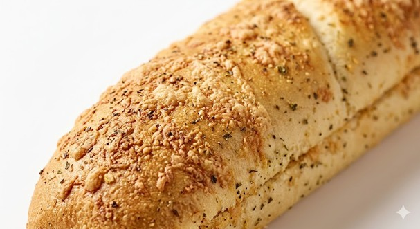
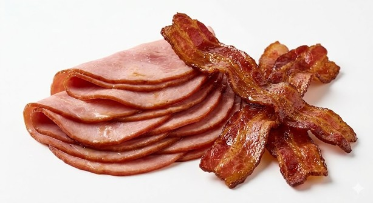
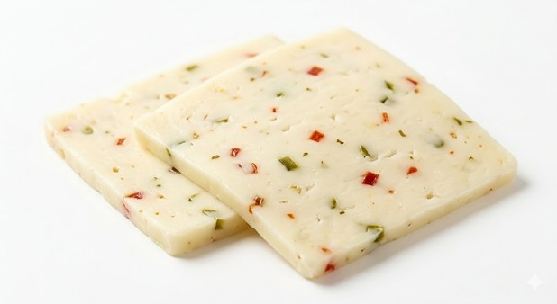
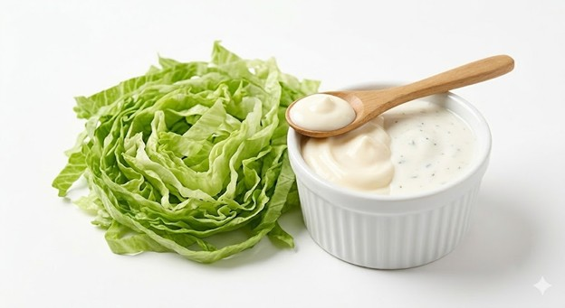

"The bread is 50% of the experience. We use an Italian Herb & Cheese loaf, baked with a crust of toasted Parmesan, oregano, and garlic. It provides the essential 'crunch' that protects the soft interior, ensuring your sandwich never feels one-dimensional."

"Most sandwiches settle for one protein. We demand two. The honey-cured ham provides a moist, sweet base, while the maple-wood smoked bacon adds a crispy, savory punch. It’s a classic flavor profile elevated by premium wood-smoked finishes."

"To keep the sweetness of the meats in check, we use Pepper-Jack. As it melts during the toasting process, the embedded jalapeño flakes release a subtle heat that cuts through the richness, waking up your palate for the next bite."

"Freshness is non-negotiable. Crisp, shredded lettuce adds a cool temperature contrast to the warm meats. We finish it with a dual-threat drizzle of mayonnaise and zesty ranch—adding a creamy, tangy silkiness that ties the entire build together."
